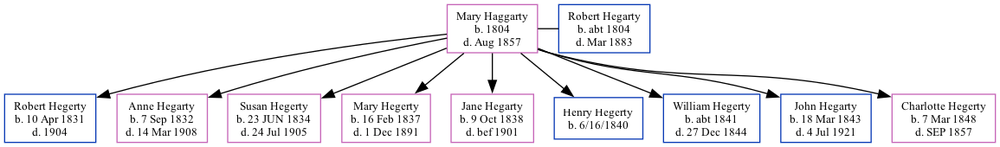

Mary Hegarty (née Haggarty) 1804 - 1857
[ Home ] | [ Calendar ] | [ Surnames Index ] | [ Family History ]Mary Haggarty was born in Ireland in 1804 and had 9 children with Robert Hegarty: Robert, Anne, Susan, Mary, Jane, Henry, William, John and Charlotte.
She died in Aug 1857 in Ireland.
Children
- Robert was born on Apr 10, 1831
- Anne was born on Sep 7, 1832
- Susan was born on Jun 23, 1834
- Mary was born on Feb 16, 1837
- Jane was born on Oct 9, 1838
- Henry was born on 6/16/1840
- William was born c. 1841
- John was born on Mar 18, 1843
- Charlotte was born on Mar 7, 1848
Family Tree
Generated by ged2site. Last updated on Sep 18, 2024